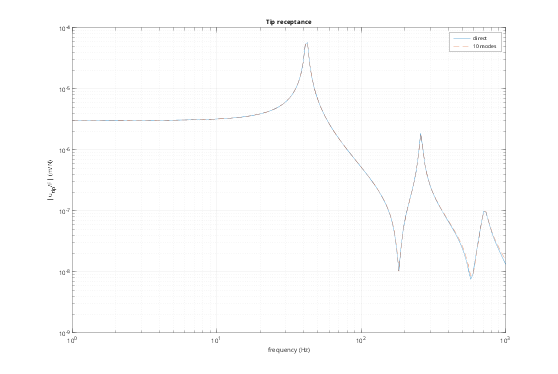
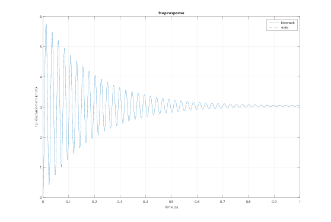
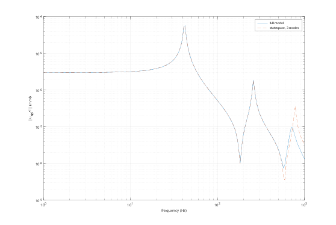

Contents
- Tutorial 9 - Dynamic analysis: damping, frequency response, time response
- 1. Input and output
- 2. Rayleigh damping
- 3. Frequency response, direct
- 4. Frequency response by modal superposition
- 5. Time response (Newmark, average acceleration)
- 6. State-space forms
- 7. One call: inputs, outputs and statespace
Tutorial 9 - Dynamic analysis: damping, frequency response, time response
With K and M, the equations of motion in the independent dofs are
M q'' + D q' + K q = T' f(t), u = T q
This tutorial covers:
- Rayleigh damping
- frequency response: direct and by modal superposition
- implicit time integration (Newmark)
- state-space forms
addpath(fileparts(fileparts(mfilename('fullpath')))); out = fullfile(tempdir, 'femTutorials'); if ~isfolder(out), mkdir(out); end fembd.boxSTL(fullfile(out, 'beam.stl'), [0 0 0], [1000 50 50]); beam = fembd.Body(fullfile(out, 'beam.stl'), fembd.material(210e9, 0.3, 7850), ... Size = 25, Scale = 1e-3); a = fembd.Assembly(); a.add(beam); a.fix('beam', @(X) X(:,1) < 1e-9); [K, M, T] = a.system(); [V, f] = fembd.modes(K, M, 10);
1. Input and output
Input: 1 N vertical force spread over the tip face. Output: the average vertical displacement of the tip face. Both are built in the full space and projected: b = T'*f_u and c = c_u*T.
d = a.dof('beam', @(X) X(:,1) > 1 - 1e-9, 3); fu = zeros(a.nDof, 1); fu(d) = 1/numel(d); b = T'*fu; c = fu'*T; % average of the tip z dofs
2. Rayleigh damping
D = alpha M + beta K gives a modal damping ratio zeta(w) = alpha/(2 w) + beta w/2. Choose alpha and beta for 2% damping at the 1st and 3rd modes.
zeta = 0.02; w = 2*pi*f([1 3]);
ab = [1./(2*w), w/2] \ [zeta; zeta];
D = ab(1)*M + ab(2)*K;
fprintf('alpha = %.3g 1/s, beta = %.3g s\n', ab);
alpha = 9.05 1/s, beta = 2.12e-05 s
3. Frequency response, direct
H(w) = c (K - w^2 M + i w D)^-1 b, one sparse solve per frequency.
fHz = logspace(0, 3, 200); H = zeros(size(fHz)); for k = 1:numel(fHz) s = 2i*pi*fHz(k); H(k) = c*((K + s*D + s^2*M)\b); end
4. Frequency response by modal superposition
With mass-normalised modes V (V'MV = I, V'KV = diag(w_i^2)), the response is a sum of single-dof systems. A few modes describe the response well below their highest frequency.
wi = 2*pi*f; zi = ab(1)./(2*wi) + ab(2)*wi/2; Hm = zeros(size(fHz)); for k = 1:numel(fHz) w = 2*pi*fHz(k); Hm(k) = sum((c*V).*(V'*b).'./(wi.^2 - w^2 + 2i*zi.*wi*w).'); end figure('Color', 'w'); loglog(fHz, abs(H), fHz, abs(Hm), '--'); grid on xlabel('frequency (Hz)'); ylabel('|u_{tip}/F| (m/N)'); legend('direct', sprintf('%d modes', numel(f))); title('Tip receptance');

5. Time response (Newmark, average acceleration)
Implicit and unconditionally stable. The effective stiffness is factorised once, so every step costs one sparse back-substitution. Here: a 1 kN step load at the tip. The response oscillates at f1 and settles at the static deflection.
dt = 2e-4; nt = 5000; P = 1000; beta = 1/4; gamma = 1/2; Keff = decomposition(K + gamma/(beta*dt)*D + 1/(beta*dt^2)*M, 'chol'); n = size(K, 1); q = zeros(n, 1); v = q; acc = M\(P*b); % initial acceleration y = zeros(1, nt); for k = 1:nt rhs = P*b + M*(q/(beta*dt^2) + v/(beta*dt) + (1/(2*beta) - 1)*acc) ... + D*(gamma/(beta*dt)*q + (gamma/beta - 1)*v + dt*(gamma/(2*beta) - 1)*acc); q1 = Keff\rhs; a1 = (q1 - q)/(beta*dt^2) - v/(beta*dt) - (1/(2*beta) - 1)*acc; v = v + dt*((1 - gamma)*acc + gamma*a1); q = q1; acc = a1; y(k) = c*q; end yStatic = c*(K\(P*b)); figure('Color', 'w'); plot((1:nt)*dt, 1e3*y, [0 nt*dt], 1e3*yStatic*[1 1], '--'); grid on xlabel('time (s)'); ylabel('tip displacement (mm)'); legend('Newmark', 'static'); title('Step response'); fprintf('final %.4f mm, static %.4f mm\n', 1e3*y(end), 1e3*yStatic);
final 3.0337 mm, static 3.0389 mm

6. State-space forms
For large models, keep the sparse descriptor form E x' = A x + B u with x = [q; q']. For small or reduced models (tutorial 10), or in modal coordinates, use the standard form. Modal state space with the 10 modes:
nm = numel(f); Am = [zeros(nm), eye(nm); -diag(wi.^2), -diag(2*zi.*wi)]; Bm = [zeros(nm, 1); V'*b]; Cm = [c*V, zeros(1, nm)]; fprintf('modal model: %d states, DC gain %.4e (exact %.4e)\n', 2*nm, -Cm*(Am\Bm), c*(K\b)); % The small DC error comes from the truncated higher modes.
modal model: 20 states, DC gain 3.0368e-06 (exact 3.0389e-06)
7. One call: inputs, outputs and statespace
All of the above in three lines: named inputs and outputs, and a reduced modal state space. Static correction adds the quasi-static response to the inputs to the modal basis, so the DC gain is exact even with 3 modes.
tipFace = @(X) X(:,1) > 1 - 1e-9; a.input('Fz', 'beam', tipFace, 3); % 1 N total over the tip face a.output('uz', 'beam', tipFace, 3); % average tip deflection a.output('az', 'beam', tipFace, 3, Type = 'acceleration'); sys = a.statespace(Modes = 3, Damping = 0.02); fprintf('statespace: %d states, DC gain %.4e (exact %.4e)\n', size(sys.A, 1), ... -sys.C(1,:)*(sys.A\sys.B) + sys.D(1), c*(K\b)); H2 = arrayfun(@(f) sys.C(1,:)*((2i*pi*f*eye(size(sys.A)) - sys.A)\sys.B), fHz); figure('Color', 'w'); loglog(fHz, abs(H), fHz, abs(H2), '--'); grid on xlabel('frequency (Hz)'); ylabel('|u_{tip}/F| (m/N)'); legend('full model', 'statespace, 3 modes'); % With the Control System Toolbox: sys = a.statespace(..., Format = "ss"); bode(sys)
statespace: 8 states, DC gain 3.0389e-06 (exact 3.0389e-06)
